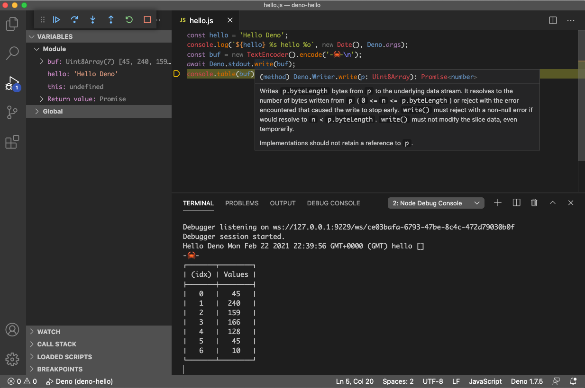

Deno
Deno is a new JavaScript runtime built on V8.
Deno uses ESM to load JavaScript modules, and natively supports browser APIs like fetch(). Together with its permissions, this makes Deno feel more like a scriptable web client, and less like a tool for building web servers.
The Deno executable is built in Rust. While this may seem like an implementation detail, you could also describe Deno as a tool to embed JavaScript inside Rust programs.
This article describes my first steps using Deno.
Getting Started
Deno can be installed by copying the release from GitHub to a location on your path. I configured my environment as follows:
export DENO_DIR=~/deno
export PATH=${PATH}:${DENO_DIR}/bin
Once installed, 'deno --version' shows the installed version and 'deno upgrade' upgrades the binary to the latest release. 'deno help' shows usage for other commands.
I recommend installing the Deno VS Code extension for IDE support and debugging. The manual suggested a launch config, which works for me, most of the time.

hello.js
Here is hello.js, my first Deno program. You can run it with deno run hello.js args...
const hello = "Hello Deno";
console.log(`${hello} %s hello %o`, new Date(), Deno.args);
const buf = new TextEncoder().encode("-🦀-\n");
await Deno.stdout.write(buf);
console.table(buf);
The easiest way to write to stdout is by using the built-in console.log().
For those curious about Deno internals:
- The global
consoleobject is created in runtime/js/99_main.js. - The
console.log()method lives in runtime/js/02_console.js. - This calls the rust function
core.printin core/bindings.rs.
Deno.stdout provides a lower level stream interface. Notice the await on the promise returned by 'Deno.stdout.write()'.
Typescript
The code above is also valid TypeScript. Since Deno includes a built-in TypeScript compiler, you could simply rename hello.js to hello.ts and it would work the same way.
The Deno Standard Library is largely written in TypeScript, as are the declarations (and auto-generated docs) for built-ins, so it helps to know a little TypeScript syntax even if you prefer to write JavaScript.
I find the TypeScript declarations most useful for code completion in VS Code.
scan.js
In the spirit of leveraging Deno as a web client, I decided to try building a simple link validator. This requires a 3rd-party library to parse HTML.
I started my search assuming that a popular npm module would be my best bet, even if it wasn't available (yet) in deno.land/x which is where library authors can register their GitHub repos to publish deno-compatible ESM modules.
After some googling, I landed on parse5 which enjoys wide usage and offers a simple, low-level tree API at its core.
I had also heard about Skypack, a CDN, specifically designed to serve npm packages as ESM modules. A quick search on skypack.dev and I had a URL for the parse5 module which works in Deno.
The code in scan.js crawls a website, validating that all the links on the site which point to the same origin can be fetched.
import parse5 from "https://cdn.skypack.dev/parse5?dts";
const rootUrl = Deno.args[0];
if (!rootUrl) exit(1, "Please provide a URL");
const rootOrigin = new URL(rootUrl).origin;
const urlMap = {}; // tracks visited urls
await checkUrl(rootUrl);
const result = Object.entries(urlMap).filter((kv) => kv[1] !== "OK");
if (result.length) {
exit(1, result);
} else {
exit(0, "🎉 no broken links found.");
}
// recursively checks url and same-origin urls inside
// resolves when done
async function checkUrl(url, base) {
base = base || url;
try {
// parse the url relative to base
const urlObj = new URL(url, base);
// ignore query params and hash
const href = urlObj.origin + urlObj.pathname;
// only process same-origin urls
if (!urlMap[href] && urlObj.origin === rootOrigin) {
// fetch from href
urlMap[href] = "pending";
const res = await fetch(href);
// bail out if fetch was not ok
if (!res.ok) {
urlMap[href] = { status: res.status, in: base };
return;
}
urlMap[href] = "OK";
// check content type
if (!res.headers.get("content-type").match(/text\/html/i)) return;
// parse response
console.log("parsing", urlObj.pathname);
const html = await res.text();
const document = parse5.parse(html);
// scan for <a> tags and call checkURL for each, with base = href
const promises = [];
scan(document, "a", (node) => {
promises.push(checkUrl(attr(node, "href"), href));
});
await Promise.all(promises);
}
} catch (err) {
urlMap[url] = { error: err.message, in: base };
}
}
// return value of attr with name for a node
function attr(node, name) {
return node.attrs.find((attr) => attr.name === name)?.value;
}
// recursive DOM scan
// calls fn(node) on nodes matching tagName
function scan(node, tagName, fn) {
if (node?.tagName === tagName) {
fn(node);
}
if (!node.childNodes) return;
for (const childNode of node.childNodes) {
scan(childNode, tagName, fn);
}
}
function exit(code, msg) {
console.log(msg);
Deno.exit(code);
}
This script is hosted at https://deno-hello.jldec.me/ using Cloudflare Pages.
To run it, call deno run --allow-net SCRIPT URL. E.g.
$ deno run --allow-net https://deno-hello.jldec.me/scan.js https://jldec.me
parsing /
parsing /getting-started-with-deno
parsing /first-steps-using-cloudflare-pages
parsing /calling-rust-from-a-cloudflare-worker
parsing /a-web-for-everyone
parsing /why-serverless-at-the-edge
parsing /fun-with-vercel
parsing /migrating-from-cjs-to-esm
parsing /forays-from-node-to-rust
parsing /about
parsing /github-actions-101
parsing /spring-boot-101
parsing /why-the-web-needs-better-html-editing-components
🎉 no broken links found.
NOTE: For this first implementation, there is no queueing, so I would not recommend pointing it at large site.
Compiling
The deno experience still feels a little rough in places, but one new feature which I really like, is the ability to compile a script into a self-contained executable.
$ deno --unstable compile --allow-net scan.js
Bundle file:./scan.js
Compile file:./scan.js
Emit scan
Now I can call scan without having to install Deno or remember any special options.
$ ./scan
Please provide a URL
$ ./scan https://jldec.fun
...
🎉 no broken links found.
To leave a comment
please visit dev.to/jldec
powered by pub-server and pub-theme-pubblog